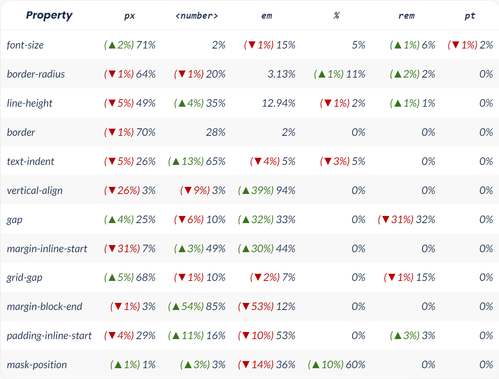

web page statistics for 2022
according to Web Almanac
css statistics
html {
width: 100%;
height: 100vh;
}
body {
margin: 0;
padding: 0;
font-family: "Gill Sans", sans-serif;
font-size: 0.7rem;
}
stylesheet transfer size by page
Desktop: 262KB
Mobile: 256KB
* for 90 persentile pages
Desktop: 72KB
Mobile: 68KB
* for 50 persentile pages
number of stylesheets per page
Desktop: 23
Mobile: 22
* for 90 persentile pages
Desktop: 7
Mobile: 7
* for 50 persentile pages
total number of style rules per page
Desktop: 2037
Mobile: 2023
* for 90 persentile pages
Desktop: 609
Mobile: 613
* for 50 persentile pages
total number of style rules per stylesheet
Desktop: 276
Mobile: 285
* for 90 persentile pages
Desktop: 31
Mobile: 31
* for 50 persentile pages
most popular class names
active: 47%
fa: 33%
wp-: 31%
button: 27%
pull-right: 26%
emoji: 26%
disabled: 26%
pull-left: 25%
title: 25%
hidden: 24%
most popular id names
content: 15%
footer: 12%
header: 10%
fb-root: 10%
fb_dialog_loader_close: 10%
fb_dialog_loader_overlay: 10%
fb_dialog_loader_spinner: 10%
respond: 9%
comments: 9%
main: 8%
Distribution of length types per property
custom property functions
calc(): 30%
linear-gradient(): 11%
rgba(): 6%
rotate(): 5%
translate: 5%
scale-x: 5%
most popular color formats
#rrggbb: 49%
#rgb: 25%
rgba(): 14%
most popular colors
thistle
springgreen
moccasin
rosybrown
lavenderblush
mediumslateblue
darkorchid
mediumorchid
Flexbox and grid adoption
Flexbox: 74%
Grid: 12%
html statistics
html lang values
en: 19%
not set: 17%
en-us: 13%
ja: 6%
es: 5%
Median transfer size of HTML document
Desctop: 31Kb
Mobile: 30Kb
Distribution of distinct elements per page
90 persentile: 45
50 percentile: 32
Distribution of elements per page
Desktop: 2023
Mobile: 1832
* for 90 persentile pages
Desktop: 711
Mobile: 653
* for 50 persentile pages
top elements
1. div
2. a
3. span
4. li
5. img
6. script
7. p
8. link
2. a
3. span
4. li
5. img
6. script
7. p
8. link
29%
of elements which are div elements
JavaScript statistics
let a = 5;
const b = 7;
function foo(a, b) {
return a + b;
};
console.log(foo(a, b));
Distribution of the amount of JavaScript loaded per page
Desktop: 1503Kb
Mobile: 1367Kb
* for 90 persentile pages
Desktop: 509Kb
Mobile: 461Kb
* for 50 persentile pages
Distribution of the amount of unused JavaScript bytes
Desktop: 645Kb
Mobile: 604Kb
* for 90 persentile pages
Desktop: 177Kb
Mobile: 162Kb
* for 50 persentile pages
Distribution of the number of JavaScript requests per page
Desktop: 63
Mobile: 60
* for 90 persentile pages
Desktop: 22
Mobile: 21
* for 50 persentile pages
1,000 most popular websites use:
webpack: 17%
babel: 40%
How is JavaScript requested?
async: 73%
defer: 42%
async & defer: 28,5%
*page using
73%
of mobile pages have render-blocking scripts in the document head